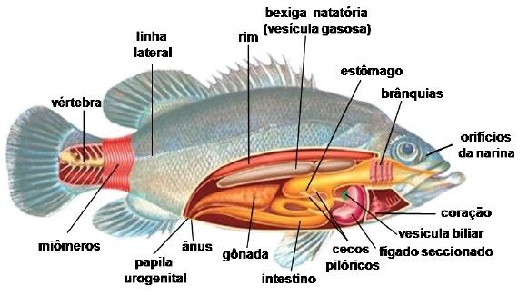

Características Adaptativas
Reino: Animalia
Filo: Cordados
Classe: Actinopterygii
Ordem: Perciformes
Família: Pomacentridae
Gênero: Amphiprion
De forma geral, é encontrado no Oceano Índico, por suas águas quentes, incluindo o Mar Vermelho e o Oceano Pacífico. Nesse sentido pode ser citado as regiões do Sudeste da Ásia, Japão, Grande Barreira de corais e Indo-Malaia.
Adaptações para viver
O Peixe palhaço durante os anos, passou por diversas adaptações para a melhor
sobrevivência no seu Habitat.
Tendo barbatanas mais arredondadas do que as outras espécies e outros peixes
anêmonas. Por mais que as mesmas dificultam o nadar do animal, deixando- o mais lento, e menos
eficaz, elas o deixam mais ágil para os arremessos rápidos.
A adaptação comportamental do peixe palhaço o torna capaz de mudar de sexo, o que ajuda
na reprodução dos mesmos, uma vez que os mesmos nao precisam achar o parceiro sexual apropriado para a
reproducao na anemona. Essa mudança também significa que o mesmo não precisa sair de
sua anêmona para procurar um parceiro, evitando se colocar em risco.
Adaptação na anêmona do mar :
Uma de suas adaptações é que o deixa imune aos venenos, com uma cobertura espessa
de muco. É o principal agente defensor contra as “picadas ” da anêmona, usado para matar
suas presas.
Obtenção de alimento
O mesmo se alimenta de Zooplâncton, pequenos crustáceos e algas.
Características Biológicas

Regulação de água
Os peixes de água salgada vivem em ambientes que apresentam uma quantidade muito
superior de sais do que a quantidade presente em seu corpo. Caso não houvesse
mecanismos de osmorregulação, que auxilia na regulação de água do corpo, o peixe perderia uma grande quantidade de água, o
que afetaria a sobrevivência do organismo.
A osmorregulação é importante para controlar a perda e ganho de água e para evitar, por exemplo, que peixes de água doce
absorvam água continuamente e que peixes de água salgada percam-na exageradamente.
Locomoção
A locomoção desses animais vertebrados ocorre através das chamadas nadadeiras e de
movimentos ondulatórios obtidos através da contração de músculos. A forma hidrodinâmica
e a presença de escamas e muco também são fatores que favorecem o deslocamento
desses seres.
Sistemas do corpo
Sistema respiratório - A respiração dos peixes é branquial, sendo que, em peixes ósseos, as brânquias
encontram-se cobertas por estruturas chamadas de opérculo.
Sistema circulatório - O sistema circulatório é fechado com um coração com duas cavidades: um átrio e um
ventrículo.
Sistema nervoso - É dividido em: sistema nervoso central, que é formado por
encéfalo e medula espinhal, e sistema nervoso periférico que é formado por nervos
cranianos, nervos espinhais e gânglios. Eles são um conjunto de combinações nervosas
que fazem os peixes terem sensações.
Comportamento

Estratégias de defesa
Os tentáculos da anêmona picam e matam outras espécies de peixes. Por não serem afetados
pelas picadas, isso é usufruído pelo peixe palhaço.
Reprodução
Os casais de Peixe palhaço passam a vida toda juntos, morando na mesma anêmona. Todos os peixes palhaços nascem machos, quando a femea do grupo morre eles eventualmente mudam de sexo. Para que isso ocorra, as glândulas do corpo passam a trabalhar de maneira diferente, para que a mudança possa ocorrer. Quando isso ocorre, a fêmea pode dominar o grupo de machos.